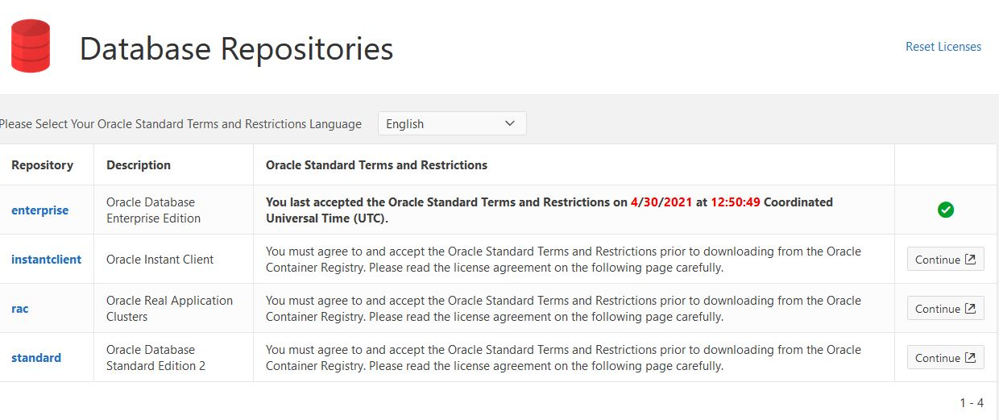

Docker
- Add note on performance tuning for large datasets!!
- Add new tags
- Update examples to show usage of simple, new tags
The 3DCityDB Docker images are available for PostgreSQL/PostGIS and Oracle. The PostgreSQL/PostGIS version is based on the official PostgreSQL and PostGIS Docker images.
The Oracle version is based on the Oracle Database Enterprise Edition images available from the Oracle Container registry.
The images described here are available for 3DCityDB version v4.0.0 and newer. Images for older 3DCityDB versions are available from TUM-GIS 3DCityDB Docker images.
Docker image versions and compatibility
The 3DCityDB Docker images for >= v5.x.x are only available for PostgreSQL/PostGIS and are only compatible with
the citydb-tool images, as of writing this (2024-12).
When designing the images we tried to stay as close as possible to the behavior of the base images and the 3DCityDB Shell scripts. Thus, all configuration options you may be used to from the base images, are available for the 3DCityDB Docker images as well.
TL;DR¶
docker run --name 3dciytdb -p 5432:5432 -d \
-e POSTGRES_PASSWORD=<theSecretPassword> \
-e SRID=<EPSG code> \
[-e HEIGHT_EPSG=<EPSG code>] \
[-e GMLSRSNAME=<mySrsName>] \
[-e POSTGRES_DB=<database name>] \
[-e POSTGRES_USER=<username>] \
[-e POSTGIS_SFCGAL=<true|false|yes|no>] \
3dcitydb/3dcitydb-pg
docker run --name 3dciytdb -p 1521:1521 -d \
-e ORACLE_USER=<theUserName> \
-e ORACLE_PASSWORD=<theSecretPassword> \
-e SRID=<EPSG code> \
[-e HEIGHT_EPSG=<EPSG code>] \
[-e GMLSRSNAME=<mySrsName>] \
[-e ORACLE_PDB=<pluggable database name>] \
[-e DBVERSION=<oracle license option>] \
[-e VERSIONING=<version-enabled>] \
3dcitydb/3dcitydb-oracle
Image variants and versions¶
The images are available in various variants and versions. The PostgreSQL/PostGIS images are available based on Debian and Alpine Linux, the Oracles image are based on Oracle Linux. The table below gives an overview on the available image versions.
| Tag | PostGIS (Debian) | PostGIS (Alpine) | Oracle |
|---|---|---|---|
| edge |   |
  |
  |
| latest |  |
 |
|
| 5.0.0 | |||
| 4.0.0 |  |
 |
|
Table 1. Overview 3DCityDB Docker image variants and versions.
Note
Minor releases are not listed in this table.The latest 3DCityDB version is:

The latest image version is:

{kind=link}
The latest v5 image versions are:
The edge images are automatically built and published on every push to the master branch of the 3DCityDB Github repository using the latest stable version of the base images. The latest and release image versions are only built when a new release is published on Github. The latest tag will point to the most recent release version using the latest base image version.
PostgreSQL/PostGIS images¶
The PostgreSQL/PostGIS images are available from 3DCityDB DockerHub and Github container registry.
The image tags are compose of the base image version, the 3DCityDB version and the image variant,
<base image version>-<3DCityDB version>-<image variant>. The base image version is inherited from the PostGIS Docker
images, e.g. 16-3.4. Debian is the default image variant, where no image variant is appended to the tag. For the Alpine Linux images -alpine is appended. Currently supported base image versions are listed in in the table below.
Warning
Depending on the base image variant and version, different versions of PostGIS dependencies (e.g. geos, gdal, proj, sfcgal) are shipped in the base images. Make sure to check the official PostGIS Docker page for details, if you have specific version requirements.
As of 2024-12 the recommended version with latest dependencies (geos=3.12.2, gdal=3.9.2, proj=9.4, and sfcgal=1.5.1) is: latest-alpine 17-3.5-5.0.0-alpine or 17-3.5-4.4.0-alpine for 3DCityDB v4.
| PSQL version PostGIS version |
3.0 | 3.1 | 3.2 | 3.3 | 3.4 | 3.5 |
|---|---|---|---|---|---|---|
| 13 | 13-3.0 | 13-3.1 | 13-3.2 | 13-3.3 | 13-3.4 | 13-3.5 |
| 14 | 14-3.1 | 14-3.2 | 14-3.3 | 14-3.4 | 14-3.5 | |
| 15 | 15-3.3 | 15-3.4 | 15.3.5 | |||
| 16 | 16-3.3 | 16-3.4 | 16-3.5 | |||
| 17 | 17-3.4 | 17-3.5 |
Table 2. Overview on supported PostgreSQL/PostGIS versions.
The full list of available images can be found on DockerHub or Github.
Here are some examples for full image tags:
docker pull 3dcitydb/3dcitydb-pg:9.5-2.5-4.4.0
docker pull 3dcitydb/3dcitydb-pg:13-3.2-4.4.0
docker pull 3dcitydb/3dcitydb-pg:13-3.2-4.4.0-alpine
docker pull 3dcitydb/3dcitydb-pg:16-3.4-4.4.0-alpine
docker pull ghcr.io/3dcitydb/3dcitydb-pg:9.5-2.5-4.4.0
docker pull ghcr.io/3dcitydb/3dcitydb-pg:13-3.2-4.4.0
docker pull ghcr.io/3dcitydb/3dcitydb-pg:13-3.2-4.4.0-alpine
docker pull ghcr.io/3dcitydb/3dcitydb-pg:16-3.4-4.4.0-alpine
Oracle images¶
Due to Oracle licensing conditions we cannot offer 3DCityDB images based on Oracle in a public repository like DockerHub at the moment. However, you can easily build the images yourself. A detailed description of how to do that is available in Oracle.
Usage and configuration¶
A 3DCityDB container is configured by settings environment variables inside the container. For instance, this can be done using the -e VARIABLE=VALUE flag of docker run. The 3DCityDB Docker images introduce the variables SRID, HEIGHT_EPSG and GMLSRSNAME. Their behavior is described here. Furthermore, some variables inherited from the base images offer important configuration options, they are described separately for the PostgreSQL/PostGIS and Oracle image variants.
Tip
All variables besides POSTGRES_PASSWORD and ORACLE_PWD are optional.
SRID=EPSG code-
EPSG code for the 3DCityDB instance. If
SRIDis not set, the 3DCityDB schema will not be setup in the default database and you will end up with a plain PostgreSQL/PostGIS or Oracle container. HEIGHT_EPSG=EPSG code-
EPSG code of the height system, omit or use 0 if unknown or
SRIDis already 3D. This variable is used only for the automatic generation ofGMLSRSNAME. GMLSRSNAME=mySrsName-
If set, the automatically generated
GMLSRSNAMEfromSRIDandHEIGHT_EPSGis overwritten. If not set, the variable will be created automatically like this:If only
SRIDis set:GMLSRSNAME=urn:ogc:def:crs:EPSG::SRIDIf
SRIDandHEIGHT_EPSGare set:GMLSRSNAME=urn:ogc:def:crs,crs:EPSG::SRID,crs:EPSG::HEIGHT_EPSG
PostgreSQL/PostGIS environment variables¶
The 3DCityDB PostgreSQL/PostGIS Docker images make use of the following environment variables inherited from the official PostgreSQL and PostGIS Docker images. Refer to the documentations of both images for much more configuration options.
POSTGRES_DB=database name-
Set name for the default database. If not set, the default database is named like
POSTGRES_USER. POSTGRES_USER=username-
Set name for the database user, defaults to
postgres. POSTGRES_PASSWORD=password-
Set the password for the database connection. This variable is mandatory.
POSTGIS_SFCGAL=trueyes|no-
If set, PostGIS SFCGAL support is enabled. Note: SFCGAL may not be available in some older Alpine based images (PostgresSQL
< v12). Refer to the official PostGIS Docker docs for more details. Setting the variable on those images will have no effect.
Oracle environment variables¶
DBUSER=username-
The database user name of the 3DCityDB instance to be created. The default value is 'citydb'.
ORACLE_PWD=password-
The database password of the 3DCityDB instance to be created. This variable is mandatory.
ORACLE_PDB=pluggable database name-
Set the name of the pluggable database (PDB) that should be used (default: 'ORCLPDB1' ). Requires Oracle 12c or higher.
VERSIONING=version-enabled-
'yes' or 'no' (default value) to specify whether the 3DCityDB instance should be versioned-enabled based on the Oracle's Workspace Manager.
How to build images¶
This section describes how to build 3DCityDB Docker images on your own. Both the PostgreSQL/PostGIS and Oracle version offer one build argument, that can be used to set the tag of the base image that is used.
BASEIMAGE_TAG=tag of the base image-
Tag of the base image that is used for the build. Available tags can be found on DockerHub for the PostgreSQL/PostGIS images and in the Oracle container registry.
PostgreSQL/PostGIS¶
The PostgreSQL/PostGIS images are build by cloning the 3DCityDB Github repository and running docker build:
-
Clone 3DCityDB Github repository and navigate to the
postgresqlfolder in the repo: -
Build the Postgresql/PostGIS image using
docker build:
Oracle¶
To build 3DCityDB Docker images for Oracle, you first need a Docker image for the Oracle database. You can either build the Oracle image yourself using the Dockerfiles and guidelines provided in the Oracle GitHub repository. Alternatively, you can download a pre-built Oracle database image from the Oracle Container registry.
Note
The Oracle database is a commercial product and is subject to license terms and conditions of use. Make sure you observe these terms and conditions before building and using an Oracle database image.
The following steps illustrate how to build a 3DCityDB image based on a re-built Oracle database image from the Oracle Container registry. You need to create an Oracle account and accept the licensing conditions first.
-
Visit https://signon.oracle.com/signin and create an account.
-
Visit https://container-registry.oracle.com and navigate to Database. Click the Continue button in the right column of the enterprise repository. Scroll to the bottom of the license agreement, which should be displayed now and click accept.
-
The repository listing should now show a green hook for the enterprise repository, as shown in the example below.

If this is the case, you are ready to pull the required base images from Oracle container registry.
-
Signin Docker to the Oracle container registry using the account credentials from above using
docker login: -
Clone the 3DCityDB repository and navigate to the
oraclefolder in the repo: -
Build the 3DCityDB Oracle image using
docker build:
{kind=link}
After the build process has finished, you are ready to use the image (see Usage) or push it to a private Docker repository.
Performance tuning for PostgreSQL/PostGIS containers¶
PostgreSQL databases offer a wide range of configuration parameters that affect database performance and enable e.g. parallelization of queries. Database optimization is a complex topic but using PGTune you can easily get a set of configuration options, that may help to increase database performance.
-
Visit the PGTune website, fill in the form and generate a set of parameters for your system. You will get something like this:
# DB Version: 13 # OS Type: linux # DB Type: mixed # Total Memory (RAM): 8 GB # CPUs num: 8 # Connections num: 20 # Data Storage: ssd max_connections = 20 shared_buffers = 2GB effective_cache_size = 6GB maintenance_work_mem = 512MB checkpoint_completion_target = 0.9 wal_buffers = 16MB default_statistics_target = 100 random_page_cost = 1.1 effective_io_concurrency = 200 work_mem = 13107kB min_wal_size = 1GB max_wal_size = 4GB max_worker_processes = 8 max_parallel_workers_per_gather = 4 max_parallel_workers = 8 max_parallel_maintenance_workers = 4 -
Pass these configuration parameters to
postgres(see emphasized line) using the the-coption when starting your DCityDB container withdocker run.docker run -d -i -t --name citydb -p 5432:5342 \ -e SRID=25832 \ -e POSTGRES_PASSWORD=changeMe \ 3dcitydb/3dcitydb-pg postgres \ -c max_connections=20 \ -c shared_buffers=2GB \ -c effective_cache_size=6GB \ -c maintenance_work_mem=512MB \ -c checkpoint_completion_target=0.9 \ -c wal_buffers=16MB \ -c default_statistics_target=100 \ -c random_page_cost=1.1 \ -c effective_io_concurrency=200 \ -c work_mem=13107kB \ -c min_wal_size=1GB \ -c max_wal_size=4GB \ -c max_worker_processes=8 \ -c max_parallel_workers_per_gather=4 \ -c max_parallel_workers=8 \ -c max_parallel_maintenance_workers=4
Include data in a 3DCityDB Docker images¶
In general, it is not recommended to store data directly inside a Docker image and use docker volumes instead. Volumes are the preferred mechanism for persisting data generated by and used by Docker containers. However, for some use-cases it can be very handy to create a Docker image including data. For instance, if you have automated tests operating on the exact same data every time or you want to prepare a 3DCityDB image including data for a lecture or workshop, that will run out of the box, without having to import data first.
Warning
The practice described here has many drawbacks and is a potential security threat. It should not be performed with sensitive data!
Image creation process¶
-
Choose a 3DCityDB image that is suitable for you purpose. You will not be able to change the image version later, as you could easily do when using volumes (the default). Available versions are listed in Image variants and versions. To update an image with data, it has to be recreated from scrap using the desired/updated base image.
-
Create a Docker network and start a 3DCityDB Docker container:
docker network create citydb-net docker run -d --name citydbTemp \ --network citydb-net \ -e "PGDATA=/mydata" \ -e "POSTGRES_PASSWORD=changeMe" \ -e "SRID=25832" \ 3dcitydb/3dcitydb-pg:latest-alpineWarning
The database credentials and settings provided in this step cannot be changed when later on creating containers from this image!
Note down the database connection credentials (db name, username, password) or you won't be able to access the content later.
-
Import data to the container. For this example we are using the LoD3 Railway dataset and the CityDB tool.
-
Stop the running 3DCityDB container, remove the network and commit it to an image:
-
Remove the 3DCityDB container:
We have now created a 3DCityDB image that contains data that can e.g. be pushed to a Docker registry or exported as TAR. When creating containers from this image, it is not required to specify any configuration parameter as you usually would, when creating a fresh 3DCityDB container.
docker run --name cdbWithData --rm -p 5432:5432 \ 3dcitydb/3dcitydb-pg:4.1.0-alpine-railwayScene_LoD3To connect to the database, use the credentials you set in step 2. The following example lists the tables of the DB running in the container using
psql.